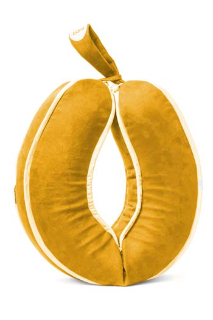
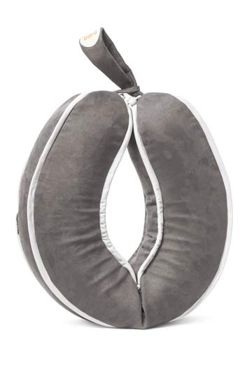
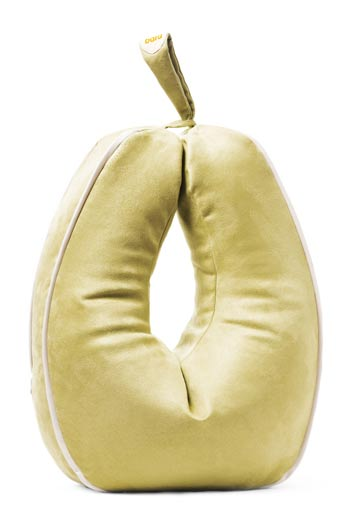
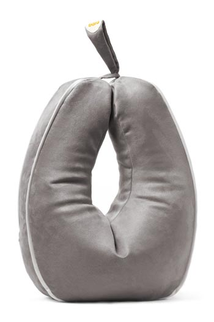
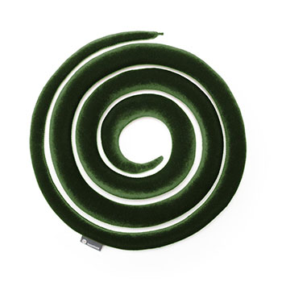
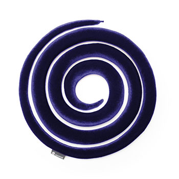

bara SNAKE
Neck Collar
A soft neck collar that helps you relax on your travels but can also
be worn creatively.
The fruits of our development and dedication have brought about a quality line-up of products; The Apple, The Pear and The Snake. All made in good collaboration with both health-care professionals and clients.
The Bara products are designed to support a better body position, reduce strain and muscle tension and increase each user’s personal comfort and participation in daily activites.


Amber Yellow
 Rouge Red
Rouge Red
 Lime
Green
Lime
Green
 Vanilla
Beige
Vanilla
Beige
Graphite Grey
 “As an Occupational Therapist I
figured there
was a need for some support under the forearms closest to the body when we sit
and work with our hands. In ergonomics this area is called the Green Zone, and
good support under the arms in this region helps reduce neck, shoulder and lower
back tension while sitting.”
“As an Occupational Therapist I
figured there
was a need for some support under the forearms closest to the body when we sit
and work with our hands. In ergonomics this area is called the Green Zone, and
good support under the arms in this region helps reduce neck, shoulder and lower
back tension while sitting.”
The Apple is a furniture-like cushion for your arms similar to
what a footstool is for your legs.
It’s a multifunctional cushion designed to support a better body position
and help reduce neck, shoulder and lower back tension when sitting.
Place The Apple in your lap, rests your arms on it and enjoy
the benefits of having the weight lifted off your shoulders while relaxing,
working and playing.
The Apple is particularly popular amongst those who do handicrafts like knitting, crochet or video-gaming and research has shown that The Apple reduces muscle tension when using it as support under the forearms while working on a computer.
The inner loop of The Apple consists of a rubber string which makes it possible to tighthen it further around your waist.
We suggest using The Apple in various ways to get the desired function and support.
By placing The Apple in a U-shape around your waist in front of your body it allows you to correct your shoulder position by resting the force of the arms on the cushion while sitting. This position alleviates the weight from your neck and shoulders and also reduces back strain. You‘ll be pleased to find that you’re able to maintain a better sitting position with this kind of support, both while working and relaxing.
The cushion can be used for lower back support in the lumbar region either when you sit up straight or lean back on a sofa. By using the cushion behind your back in this way you can also get good arm support alongside your body.
It’s also possible to tighten The Apple around your waist to support your hands while standing upright.
As a cushion it has numerous possibilites. When lying down place it between your legs, under your legs to elevate them, under your head or arm, just relax and get creative, that’s what we’re all about.
The pillowcase can be washed at max 30°C on a mild program without bleach in a washing machine. It can also be dry cleaned.


Vanilla Beige
 Lime
Green
Lime
Green
 Amber
Yellow
Amber
Yellow
 Rouge
Red
Rouge
Red
Graphite Grey
The Pear is a big and comfortable cushion, designed specially to be used as support under your forearms to improve your sitting position and ease muscle-tension in your shoulders, hands and back.
When The Pear is positioned around your waist resting on your
lap it creates a soft table in front of you. This space can be perfectly suited
to rest something heavy like a big book.
With extra size but also similar properties The Pear is kind of
like the bigger sibling to The Apple-cushion.
From the beginning physio- and occupational therapist have recommended The Bara-cushions. Many people experience a feeling of safety, wellness and better balance while seated with their arms rested on the cushions. Research has shown that using them for support under the forearms while working on a computer reduces muscle tension.
Use The Pear in various ways to give you the desired function and support.
When the cushion is placed in the ergonomic Green Zone it allows you to correct your shoulder position by placing the force of your arms and hands on it. In this way the weight from your neck and shoulders is reduced and furthermore, it relieves back strain. You will also be able to maintain a better sitting position with this kind of support, both while working or relaxing.
The cushion can be used in numerous ways when lying down so you can settle into a better body position. It it can provide good support under either arms or legs and thus increase relaxation.
The pillowcase can be washed at max 30°C on a mild program without bleach in a washing machine. It can also be dry cleaned.


 Cox
Grey
Cox
Grey
 Burgundy
Red
Burgundy
Red
Moss Green
Navy Blue
The Snake is a soft neck collar that can be easily wrapped around the neck like a scarf to get the desired support.
It might not look like a neck collar at first, but that’s exactly the idea
behind the design of The Snake, to attract positive attention
to the user instead of focusing on an underlying physical illness.
It’s an excellent solution for people with chronic neck-pain.
The Snake offers numerous possibilities when wearing it as an accessory or scarf and it is the perfect travel buddy, supporting your head so you can easily take a nap on long flights.
The Snake offers never before seen usability options as a neck-support collar.
The Snake is the ideal travel companion, wrap it around your
neck upwards from your shoulders to your chin and adjust it to get the perfect
support.
Whether you’re travelling longer or shorter distances, in a plane, train
or a car the Snake can really help you relax and sleep when supporting the
weight of your head.
The unusual design of the neck-collar makes it possible to use it in creative ways as a stylish accessory. Sculpture The Snake in any way your imagination makes possible and have a new exciting accessory each time you wear it.
The neck collar is a good reminder of keeping your neck in a healthy upright position, preventing poor posture. Not letting your head fall forward or having an unhealthy strain on your neck and shoulders for longer periods.
The collar can provide those with minimum or chronic neck injuries sufficient support and you can decide by yourself how firm the support shoule be at any given time. The Snake helps the neck stay in a more stable position, increasing the feeling of comfort and security.
The bara SNAKE can only be handwashed at a maximum of 40°C. It must be handled with care and may not be stretched. It muse be put in a washing-bag if washed in a washing machine.


Start with the shorter and wider end resting on your shoulders at the bottom of your neck.
Wrap it around your neck and upwards so that it sits comfortably.

Tuck the narrow end in between your neck and the snake to close the loop.
Relax and enjoy the support of The Snake from Bara.
{kind=link}
{kind=link}
{kind=link}
{kind=link}
{kind=link}
{kind=link}
{kind=link}
{kind=link}
{kind=link}
{kind=link}